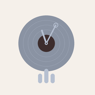

House Music Scheduler
by Nils John
SOURCE
Spotify connection
Redirect URI to add in your Spotify app:
Works fully offline. The file is stored in this app and loops until the stop time.
SCHEDULE
ACTIVITY LOG
For reliable timed playback: keep this app open in the foreground, the iPad plugged in, and Auto-Lock set to
"Never" (the screen is kept awake automatically while a schedule runs). Install it via Share →
"Add to Home Screen".